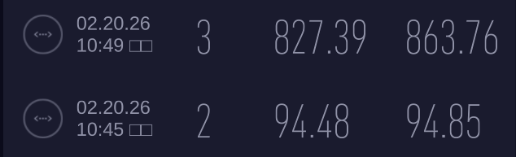
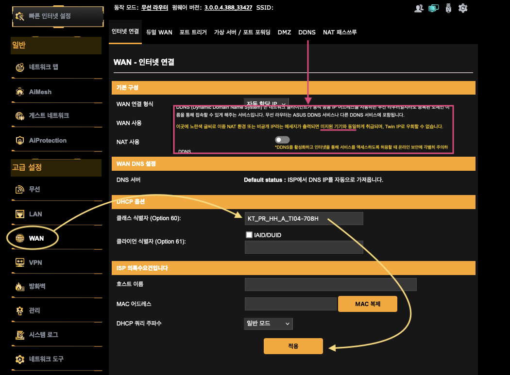
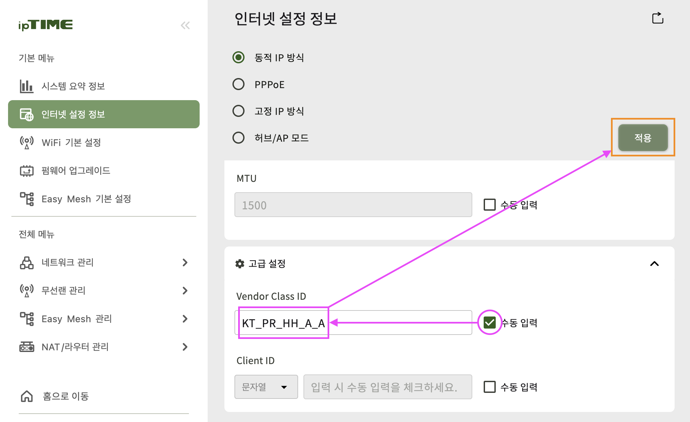
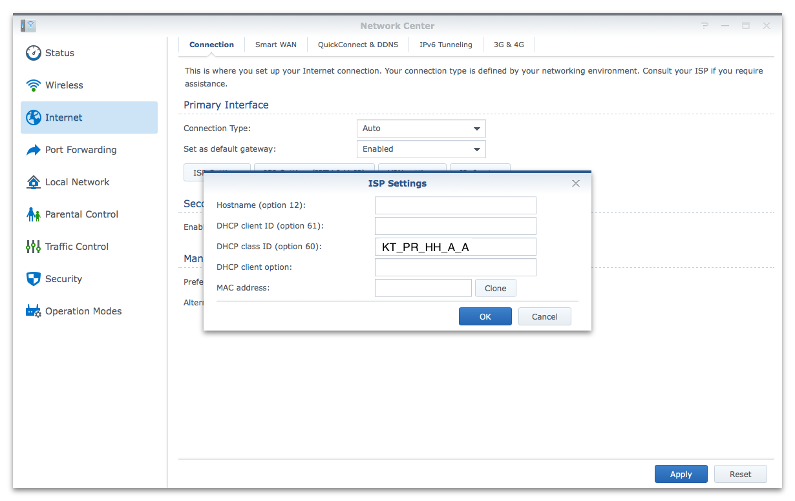
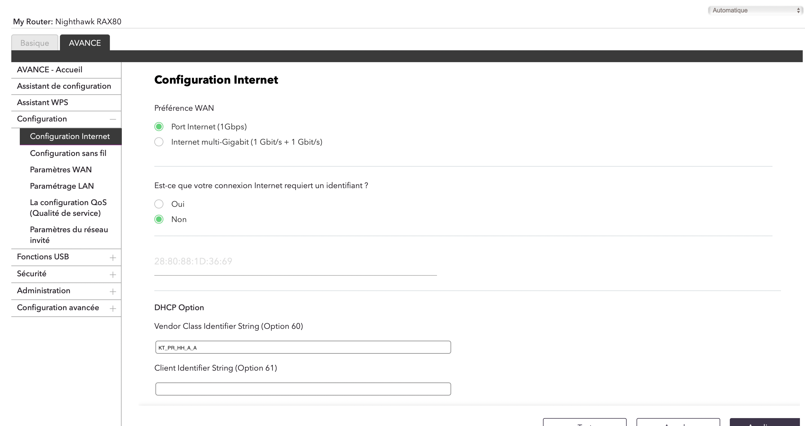

개붕이들 ㅎㅇ 동영상 다운로더 만든 개붕이다.
본인 개붕쟝 최근에 동영상 자동 다운로드 기능 테스트 때문에 JAV 600개 다운로드 걸어두고 꿀잠 때리고 아침에 일어났더니 인터넷 속도가 곱창이 나있었다.
모친타계하신 KT는 기가 인터넷을 써도 종량제를 채택하고 있어 1일 150GB를 초과하는 트래픽이 발생할 경우 그날 하루는 해당 가입자회선의 인터넷 속도를 100mbps 로 낮춰버린다.
예전에는 고객센터에 전화해서 QOS걸렸으니 풀어달라 하면 풀어주는 경우도 있는데 요즘엔 얄짤 없이 안풀어준다.
그런데 KT의 일반 인터넷은 종량제를 채택하고 있으나 KT 인터넷 TV(IPTV)의 경우, 트래픽이 얼마가 발생하든 속도제한이 걸리지 않는다.
그래서 이번 글에서는 집 인터넷에 IPTV용 IP를 할당받아서 QoS(종량제 속도제한)을 우회하는 방법을 알려줄거다
장단점
장점 : 속도제한을 무시함
단점 : 일부 내수용 사이트에서 Captcha를 요구하거나 접속이 안될수가 있음
설정 방법
1. 공유기 설정 화면에 들어간다
2. DHCP 옵션 화면에 들어간다. (기기마다 접근 경로가 다름, 아래 공유기 종류별 설정 방법 사진 참고)
3. DHCP 클래스 식별자를 IPTV 용 식별자를 넣어주면 된다.
(식별자 값 : KT_PR_HH_A_A)
4. 적용하면 100메가로 창나있던 속도가 정상화 되는걸 볼 수 있다. (짤은 예전에 설정했던 당시의 테스트 기록)

공유기 제조사별 설정 방법
(이미지 출처 GitHub - veilRedeemer/bypassQoSKoreatelecomISP: KT GiGA 인터넷의 일일 150GB QoS제한 우회 팁 · GitHub )
1. ASUS 공유기

2. IPTIME 공유기

3. 시놀로지 공유기

4. 넷기어 공유기

사족
1. 개발한 동영상 다운로더 앱 개붕이들이 많이 받아준덕에 2000 다운로드를 넘겼음 받아주고 사용해준 개붕이들 너무 고맙다.
2. 앱에 최근에 다운로드 자동화를 추가함 접속한 페이지의 링크를 자동으로 수집해서 받아주는 편의 기능임
어제 이걸로 영상 600개 받다가 QoS 걸린거
유용하면 개추좀
다운로더 잘쓰고있다 개붕아 ㅋㅋ
pc버전도 출시 테스트하는 겅가